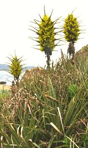

Magnolias

SAFARI
Users
Pineapple
 [Piña, Ananá (Spanish); Ananas comosus]
[Piña, Ananá (Spanish); Ananas comosus]
The Pineapple is the only bromeliad familiar as food in North America, or just about anywhere else. They were taken throughout the tropics by the Spanish and Portuguese, and are now grown in humid tropical regions worldwide.
A large flower spike grows at the top of the plant, with about 200
flowers. Each flower produces a berry, and as the berries mature, they
fuse together into the multiple fruit we call a "pineapple".
Fertilization must be prevented or the pineapple will be full of seeds,
South American pineapples are green when ripe but some of the patented
varieties, particularly from Hawaii, are green and gold when ripe.
Details and Cooking.
Chagual
 [Puya chilensis and other Puya species]
This bromeliad is native to north facing hillsides of the Andes mountains
of west central Chile. It is reported that natives of the region use the
bases of young leaves to make salads. The leaf fibers are probably of
more culinary value because they are used to weave durable fishing nets.
Photo by Mar del Sur distributed under license Creative
Commons
Attribution-ShareAlike v3.0 Unported.